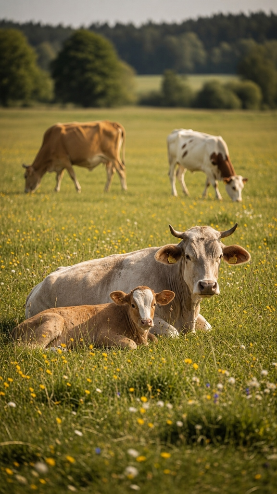

Our Heritage
Ancestral
Preservation.
We don't sell a traditional life as a marketing gimmick. We invite you to support a lifestyle we never abandoned. At Gaurya Farms, located in the heart of Chittorgarh, Rajasthan, our mission is to preserve the sacred bond between humanity, nature, and the indigenous Gir cow.
For generations, our family has practiced the Bilona method—not because it became a trend, but because it is the only way we know how to honor the milk. It is a slow, methodical, and profoundly spiritual process that demands patience and uncompromising dedication.
The Philosophy
More than a business,
it's a devotion.
In an era of mass production and hyper-efficiency, we chose the path of resistance. True A2 Bilona Ghee cannot be rushed in a factory. It requires the gentle rhythm of hand-churning before dawn, the exact temperature of a slow-burning wood fire, and the silent, intuitive knowledge passed down through our ancestors.
We restrict our batches deliberately. By focusing exclusively on this single craft, we ensure that every jar that leaves our farm carries the energetic signature of pure, unadulterated devotion.


Revering the
Gir Cow.
Our indigenous Gir cows are not livestock; they are the heart of our community. They graze freely on organic pastures under the Rajasthani sun. We follow the ancient 'Dohan' system—where the calf always receives its share of milk first, and only the surplus is taken for churning.
This ethical, cruelty-free approach ensures that the milk is given out of abundance and love, translating into the high vibrational quality and medicinal properties of our final Bilona Ghee.
"When did we all agree that 'faster' was better when it comes to the food we feed our families?"
"Somewhere along the line, India was convinced that a factory-processed tub from a supermarket shelf was the same as what our Dadis and Nanis made with their hands. But deep down, every time you smell real, golden, slow-churned ghee, you know the difference."
"We didn't start Gaurya Farms to give you a sustainability lecture or a wellness sermon. We started it as friends who went back to the village, unlearned the shortcuts, understood the science, and brought the original stuff back."
"You know better, and now you can do better. Here's to bringing the soul back to your kitchen."
Nitika Devpura
Founder, Gaurya Farms